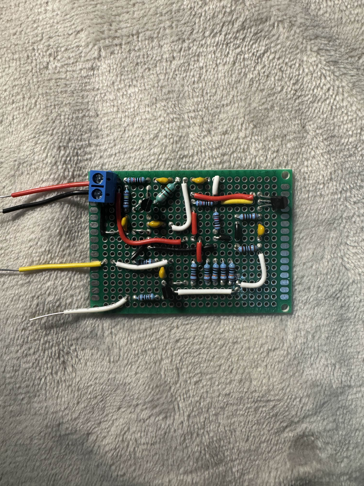

Electrical Engineering Student
I am an Electrical Engineering student who enjoys designing and building electronics. My interests include analog and digital circuit design, RF electronics, and hands-on engineering projects that strengthen both my technical knowledge and problem-solving skills.
A discrete-component AM transmitter designed and built from scratch. The transmitter generates an RF carrier, modulates it with an audio signal, and produces a receivable AM signal.

I designed and constructed the transmitter in stages, testing the oscillator, amplifier, and modulation circuitry before integrating the complete system. The final circuit was soldered onto a protoboard and successfully transmitted an audio signal using amplitude modulation.
A circuit simulation program written in C++ that uses Modified Nodal Analysis and numerical integration to solve electrical circuits over time. The simulator models components such as resistors, capacitors, inductors, and independent sources while providing a graphical interface for constructing and analyzing circuits.